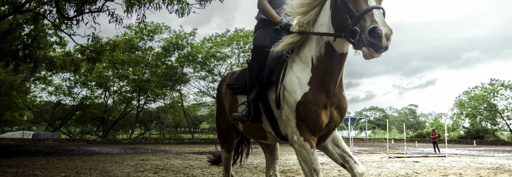

1. Wine Tour Event
A wine tour is one such classy experience of course for wine lovers, but also for anybody who is here just for the fun of it.
This is an entire tour in itself and takes up about 60 minutes. It commences at around 10.30 AM.
Initially, guests are informed about the history of wine and its cultivation before heading to the vineyard. This is a fun yet knowledgeable event.
It’s quite interesting to witness these procedures and understand the know-how behind the scenes.
Every portion of the wine-making is discussed, ranging from fermentation to the procedures of bottling and finally the labeling.
Undoubtedly the most awaited part of this tour is the event of wine tasting.
Here guests can sample up to six different varieties of wines, out of which two are of Indian origin and the rest are authentic French.
When you indulge in this experience you come out as a wine connoisseur at the end of it. This event can be attended anytime between 10:30 AM to 4:00 PM.
Also, do keep in mind that this tour is not accessible for children. There is a minimum entry charge for the vineyard with all applicable taxes.
The weather sometimes is unpredictable, so it is always safe to carry a jacket with you.
Added fact is the delicious lunch available in the in-house restaurant. It’s worth going here and is one the most popular events in Bangalore.

2. Horse Ride Safari
A way to excite a boring weekend is by going for the enthralling safari experience in the gorgeous villages of Jakkur.
This tour takes you exploring the authentic old-fashioned tiny villages, rudimentary bazaars and the untouched wilderness of the surrounding woods.
There is no experience in comparison to that of riding on a horseback,
cutting through the wind; you feel the magnanimous control over your life while you’re freely galloping through the meandering lanes.
Witnessing the beautiful sunrise while horse riding is an added feather to the cap.
Interacting with the locals and learning about their lifestyle is simply nice. This tour ends with a lip smacking breakfast at the famous local restaurant.

3. Sunday Soul Sante
Bangalore’s biggest and most happening flea market is Sunday Soul Sante.
As the name suggests this flea market takes place on Sundays of particular month.
It’s an expansive ground, flooded with stalls ranging from clothes, food stalls, art stuff and much more.
It easily takes an entire day to have a look around the place. Accompanying the flea market are the energetic performances by bands.
This flea market is a beautiful event in Bangalore, which simply cannot be missed out on.
Some of the stalls here sell such unique stuff that you’re definitely not going to get in any other part of Bangalore
because these companies sell only at flea markets like Soul Sante. The crowd is flooded with young energetic people and for shopaholics,
it’s nothing less than a paradise. Must visit!
4. Cycling Trail
For all those people who are looking for something challenging to encounter, this place is a must to go.
Doesn’t matter if you’re a beginner or a pro at cycling, this place is easy on you and have trained professionals who will guide you throughout.
The terrain, weather and safety are all guaranteed so you have nothing to worry about.
These rides range from half day rides, to one full day rides or rides which are spread over more than one day.
It’s simply an experience in itself- the joy of cycling. You can also socially meet like-minded people and have a blast of your own.
Moreover, there are about 15-20 different terrain categories to choose from! What more to suit your needs eh?

5. Sunburn Festival
Who hasn’t heard about the infamous Sunburn Festival? This festival is a chief of EDM (electronic dance music).
Its most popular and happening event takes place in Goa which takes place in December.
But before that they have their large gigs in some of the biggest cities in India, one of them being Bangalore.
A crowd of nothing less than 10,000 show up for this event.
The event consists of a line of artists, with some of the most popular international artists being a part of it.
The music is loud, beer is loaded, and people are in full swings. There is so much energy in the air, and people exhibit utmost zeal.
In Bangalore, there are ideally just a couple of locations where Sunburn takes place as only these places can accommodate such a huge crowd.
Music is never a disappointment. One can simply enter into its trance and refuse to come out.
Some of the most famous artists are Hardwell, Martin Garrix, David Guetta, and Dmitri Vegas.

6. Antharganage Trek And Cave Exploration
The Anthargange trek is one of the most coveted trekking spots near Bangalore.
It's a unique confluence of trekking and cave exploration that takes the excitement one notch up.
Anthargange hill is completely surrounded by boulders. Located around 65km from Bangalore near Kolar,
the elevation of the top of this hill is 1712m above sea level. Anthargange Sunrise Trip is an unforgettable experience in terms of
trekking and cave exploration. The trek which is around 3km in length, you will find it to be pretty moderate as the trek starts with
finding a way through broken rocks and tricky path in the boulders to finally arrive at the cave site to explore.
This amazing experience of making your way through the formation and crawling at times because of the cave's volcanic rock
formation is a tale that will become everyone's point of envy.
The experience at Anthargange cave takes you back to prehistoric times, where you finally could be a "Cave Man".
Unwind by the bonfire and let the magic of early dusk hours captivate you. All the efforts and wait pays off right after the completion of the trek
when you get to witness the mesmerizing sunrise from atop the mountain. And, if luck favors, you might catch a glimpse of some wild animals around.
As the dusk fades away, make your way back through the cave to the base.

7. Movie Screenings At Alliance Française De Bangalore
If you love world cinema, you’ll reel at what Alliance Francaise de Bangalore has in store for you.
On second Wednesdays each month, movie buffs from the AF Cinéma Club meet up for a 7pm screening of the latest French movies.
There’s more: fourth Thursdays are dedicated to French documentaries.
8. Sketch Sundays At Pencil Jam
Every Sunday, doodlers unite at interesting landmarks for a day of sketching.
All you need to do to participate is RSVP for the event and show up with your sketchpad in hand.
Through the session, you can catch up with fellow artists, hone your craft, and rediscover Bangalore through brushstrokes.

9. Sky Lamp Music Festival
Sky Lamp Music Festival is an open-air party on a green land with a spectacular view from the surrounding, it is a great blend of good electronic
dance music, drinks, cocktails, BBQ and heavenly food. Our concept is nature, we want to make people break free from their hectic city life and live,
dance and celebrate the new year in the natural world.
10. BBQ and Movie Meet
It's GRILLING time baby! Admit it, we've all wanted to try barbeque and cozy up for the movies.
Kloh is organizing one-of-a-kind barbeque get-together with movies for the weekend.
The BBQ Nights is an old tradition, where food is cooked outside, shared, and eaten in a most casual gathering.
Don't worry if you have no prior knowledge of grills. While you're at it, we will prepare the cookout to help you get that burger patties grilling and voila!
The smell of barbequed food and the skill of firing up over is a perfect weekend activity and a delight to your taste buds.
Fire-up your burgers, gulp on those fries and munchies and meet a bunch of foodies and movie buffs like you and have a memorable barbeque time.
11. Graffiti GamiFYI'd
A clue hunt in the real world.
This quest gives you a glimpse of the colourful walls in Central Bangalore that were painted by various street artists.
Walk approximately 2.5 kms and adore the beautiful paintings that are hidden in the heart of the city.
Round up your friends and family and play as a team.

12. British Bangalore Walk
Join us as we take a walk back in time exploring the rich history hidden in hedges and araucarias of the lush garden of Cubbon park.
Get to know the significance of the magnificent British era buildings in its precincts - a beehive of activity to this day
Who are these 5 people with their statues in the park? Learn about their history and contribution Stroll through the main British era thoroughfare,
past a garrison church as we wrap up the walk with a splendid South Indian breakfast.
13. Weekday Chocolate Tour at Jus Trufs
For families who would like to spend some time together creating some great chocolates, it is a therapeutic, time and brings out the inner child
in each one of us.
A brief introduction to Cocoa beans and our raw materials.
A tasting session of our chocolate ranges.
The family will spend time with our chocolatier and will make a few lollipops, truffles and chocolate rocks together.
They will decorate their products and take them home with them.
14. Hand Painted Leather Lampshades - Bangalore
ITEEHA is coming back to Bengaluru, after a fantastic response in earlier months,
we will be conducting many more exciting workshops at The Arts Village, register soon!!!
Decorate your homes by painting your own Leather Lamps under the guidance of Master Craftsman from Andhra Pradesh.
These colorful lamps are made mainly on goat leather using colorful vegetable dyes. ( Now using Waterproof Colours)
The craft of making these lamp shades is related to a very old but fast disappearing traditional folk form of leather puppetry known as Tholu Bommalata.
15. Bangalore Salsa Talkies
Witness an evening of flair, beauty, strength, elegance and charisma at the first ever "Bangalore Salsa Talkies" !
This is an evening of compilation of Salsa dance performances by multidiverse people who are willing to show you what it takes to train
and turn into a Salsero!
We have a lot in store for you but we do not want to ruin the surprise by mentioning it all here.
We promise you one thing for sure - A Feel good Salsa show which is bound to tickle those dancing neurons within you.